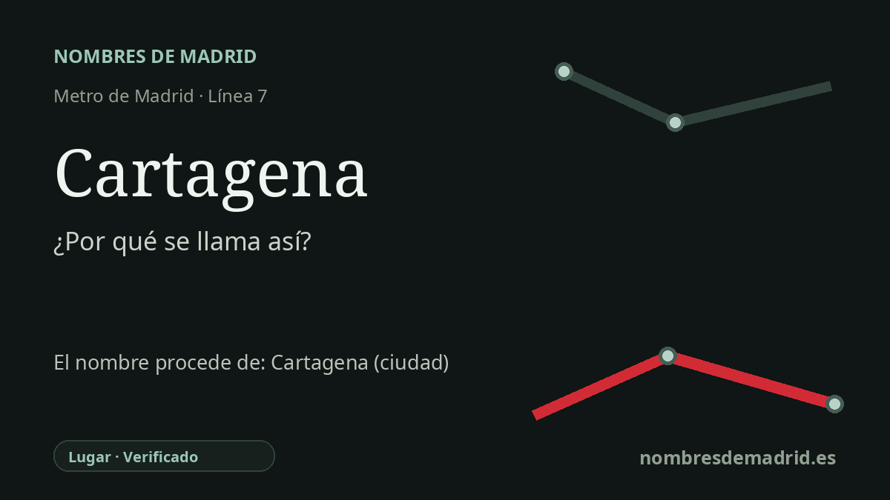

Publicado el · Investigación de Nombres de Madrid · Cómo verificamos cada origen · 7 fuentes consultadas
Respuesta rápida
La estación de Cartagena toma su nombre de la calle de Cartagena, junto a la avenida de América. La calle recuerda a Cartagena, en Murcia, la antigua Qart Hadasht púnica y Carthago Nova romana.
La historia del nombre
Cartagena es una estación con nombre de calle. Su denominación procede de la calle de Cartagena, la vía que cruza la avenida de América sobre la estación y que también da nombre al vestíbulo registrado por el Consorcio Regional de Transportes de Madrid.
Detrás de la calle madrileña está Cartagena, en Murcia, uno de los puertos mediterráneos históricos de España. El nombre remite a la ciudad cartaginesa de Qart Hadasht, explicada habitualmente como «Ciudad Nueva», fundada hacia el 227 a. C. bajo Asdrúbal. Tras la toma romana de 209 a. C., pasó a conocerse como Carthago Nova.
Ese nombre antiguo no era secundario: Cartagena fue un enclave estratégico por su puerto, su entorno minero y su posición defensiva. Los materiales municipales y arqueológicos de la propia Cartagena siguen presentando Qart Hadasht y Carthago Nova como capas esenciales de la identidad histórica de la ciudad.
En Madrid, la estación forma parte de la prolongación de la línea 7 hacia Avenida de América, abierta en 1975. El callejero oficial del Ayuntamiento sitúa la calle de Cartagena en los distritos de Chamartín y Salamanca, y la estación queda en el borde de Prosperidad y La Guindalera, no en Ciudad Lineal.
La etimología, por tanto, es segura para la estación: Metro tomó el nombre de la calle inmediata, y la calle remite a la ciudad murciana. No consta el acuerdo municipal original que impuso el nombre a la calle madrileña, de modo que ese último eslabón está bien apoyado por la evidencia callejera, aunque no por un decreto de denominación.